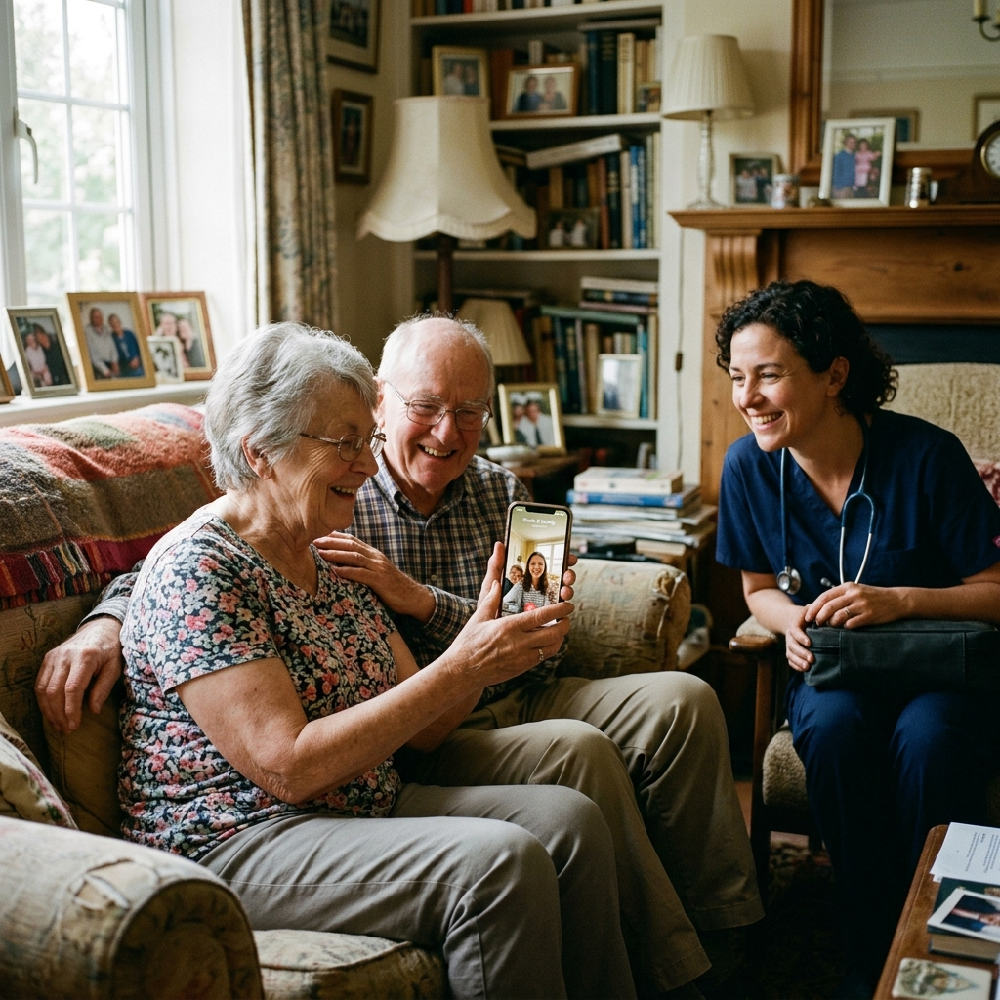

Olvídate del tráfico y las salas de espera saturadas. Nuestro equipo de médicos colegiados y enfermeros acude a tu casa con insumos estériles y equipos de diagnóstico.
24/7
Disponibilidad de urgencias
+1,200
Pacientes atendidos
100%
Insumos y técnica estéril
Nacimos en Valencia, Edo. Carabobo, con una convicción clara: cuando la salud de un ser querido se compromete, trasladarse por la ciudad y esperar largas horas en una clínica no debería ser la única opción. Llevamos el rigor hospitalario y el calor humano a la tranquilidad de tu habitación.
En MEDIHOME entendemos que el hogar es el mejor entorno para recuperarse. Para nuestros adultos mayores, niños o pacientes convalecientes, recibir atención médica en su propio espacio reduce el estrés, evita contagios intrahospitalarios y brinda paz a todo el entorno familiar.
No improvisamos. Todo nuestro personal cuenta con registro profesional activo y aplica protocolos clínicos fundamentados en las mejores prácticas médicas.
Las urgencias no tienen horario. Mantenemos guardia activa para trasladarnos con prontitud a las principales urbanizaciones de Valencia.
Nos tomamos el tiempo para evaluar detalladamente al paciente y explicar a sus familiares el plan de tratamiento con cercanía, paciencia y respeto.
Somos los ojos y manos de los hijos que viven fuera del país, entregando informes médicos digitales y fotos de control tras cada visita.
Dr. Víctor Cedeño y Alejandra Ramones (Asistente Médico) explican nuestro compromiso y rapidez en Valencia.
Formatos válidos para Farmatodo, Locatel, aseguradoras y reportes en PDF para familiares en el exterior.
Diseñado especialmente para la comodidad de adultos mayores y familias.
Envía un mensaje de texto, nota de voz o llama a nuestros números 0412-1233287 / 0414-4417118 indicando el síntoma y tu ubicación.
Nuestro equipo médico evalúa de inmediato la prioridad clínica, te indica el tiempo estimado de llegada y asigna al profesional adecuado con los insumos estériles requeridos.
El médico o enfermero llega a tu casa, realiza la evaluación física, ejecuta el procedimiento necesario, emite récipes oficiales y deja las indicaciones de seguimiento.
Atención clínica integral, procedimientos menores y cuidados especializados en tu hogar. Realizamos cualquier tipo de servicio o requerimiento médico que el paciente necesite, garantizando insumos estériles, bioseguridad y el más alto rigor profesional.
Atención médica de urgencia en tu domicilio ante crisis de dolor, dificultad respiratoria, caídas o descompensaciones agudas a cualquier hora de la noche.
Administración profesional de tratamientos farmacológicos por vía intravenosa (EV) o intramuscular (IM): antibióticos, analgésicos, corticoides y protectores gástricos.
Tratamiento de úlceras por presión (escaras en pacientes encamados), pie diabético, quemaduras y heridas quirúrgicas con apósitos e insumos estériles de alta gama.
Colocación, retiro y mantenimiento periódico de sonda vesical (Foley) y sonda nasogástrica bajo estricta técnica aséptica, evitando traumas y dolor al paciente.
Infusiones endovenosas para deshidratación, fatiga extrema, cuadros gastrointestinales, resacas y refuerzo inmunológico con cócteles de vitaminas del complejo B y electrolitos.
Instalación de accesos venosos con catéteres seguros para infusión continua de sueros, antibióticos o alimentación parenteral en el hogar.
Descompresión, incisión y drenaje estéril de abscesos, forúnculos y quistes infectados con anestesia local para alivio inmediato del dolor.
Sutura de heridas superficiales por caídas o cortes accidentales, curaciones quirúrgicas y retiro de puntos o grapas con material descartable estéril.
Emisión de Certificados de Salud Vial (Licencia de Conducir), certificados médicos escolares, pre-empleo y evaluaciones físicas integrales.
Telemedicina inmediata para triaje previo, orientación clínica ante síntomas leves, segunda opinión y revisión e interpretación de exámenes de laboratorio.
Monitoreo continuo de Diabetes Mellitus e Hipertensión Arterial, ajuste de tratamientos orales o insulina y seguimiento de glicemia y tensión sin salir de casa.
Escolta y asistencia médica profesional a bordo durante vuelos comerciales o privados (nacionales e internacionales). Monitoreo continuo de signos vitales, administración de fármacos, oxigenoterapia y soporte clínico integral puerta a puerta.
Nuestro equipo médico y de enfermería está completamente facultado y equipado para llevar a cabo una extensa gama de intervenciones clínicas, tomas de muestras, colocación de esquemas de tratamiento indicados por tu médico tratante, curaciones complejas y cuidados posoperatorios.
¿Vives en Estados Unidos, España, Chile o cualquier parte del mundo y te preocupa la salud de tus padres en Valencia? Nosotros somos tus ojos y manos médicas a su lado.
Tras cada visita a tus padres, te enviamos a ti un informe detallado con fotos, signos vitales y evolución clínica.
Paga sin complicaciones vía Zelle, PayPal, Binance USDT o transferencia Banesco Panamá.
Si a tus padres les ocurre un imprevisto de noche, acudimos a su casa sin que tengas que angustiarte a la distancia.

"Tú trabajas en el exterior, nosotros cuidamos de ellos con amor y profesionalismo médico en su hogar."
Personal colegiado ante el Colegio de Médicos del Estado Carabobo y debidamente registrado en el MPPS.
Médico Cirujano General • Coordinador Clínico y Urgencias
📋 Colegio de Médicos Carabobo: Colegiado Activo
🏥 Registro MPPS: Certificado
🩺 Áreas: Urgencias domiciliarias 24H, estabilización clínica, procedimientos quirúrgicos menores, control de hipertensión, diabetes y sueroterapia.
Asistente Médico • Coordinación de Pacientes y Cuidados Clínicos
🩺 Rol Clínico: Triaje médico inicial, preparación de insumos estériles y asistencia al Dr. Víctor Cedeño.
🏥 Atención: Asistencia en curaciones, apoyo en sueroterapia, monitoreo de signos vitales y seguimiento continuo al paciente.
💬 Atención 24/7: Coordinación directa de urgencias y orientación personalizada a pacientes y familiares.
Técnicas Asépticas Avanzadas
Cuidados Especiales y Terapias Endovenosas
📋 Colegio de Enfermeros Carabobo: Registrados
🏥 Protocolo: Bioseguridad y asepsia estricta
🩺 Áreas: Sondas, sueros, curas de escaras y vías.
La satisfacción, el alivio y la dignidad de nuestros pacientes en Valencia son nuestro mayor compromiso ético.
"El Dr. Víctor Cedeño atendió a mi mamá durante una crisis hipertensiva a las 11:30 PM. Su serenidad, respeto y calidez nos devolvieron la calma de inmediato. Llegó en menos de 25 minutos a El Trigal y nos dejó el récipe y las indicaciones claras. No tuvimos que someter a mamá al estrés de una emergencia de clínica."
Urb. El Trigal Norte • Familiar
"Vivir en Miami y saber que mis padres de 79 y 82 años están en Valencia solía darme mucha angustia. Con el Plan Salud Sin Fronteras de MEDIHOME, recibo los informes médicos detallados por WhatsApp con fotos y lecturas de glucosa tras cada visita. Es la mejor inversión por su salud y mi paz mental."
Salud Sin Fronteras (Miami ➔ Prebo)
"La Asistente Médico Alejandra Ramones realizó la curación postquirúrgica y el retiro de puntos de mi esposo tras su operación. Una técnica aséptica impecable, abrió todo el material estéril nuevo en nuestra presencia y nos explicó paso a paso la evolución de la herida. Profesionalismo de primer nivel."
Urb. El Parral • Paciente y Colega
Jeringas, gasas, sondas y catéteres abiertos frente al paciente.
Registro MPPS y Colegio de Médicos de Carabobo en cada récipe.
Control médico y monitoreo de evolución directamente por WhatsApp.
🔒 Garantía de transparencia: Emitimos récipe médico certificado con sellos oficiales y código QR aceptado en toda la red farmacéutica de Valencia.
Selecciona el procedimiento y tu urbanización en Valencia para coordinar
✓ Cobertura Médica Activa
Tiempo estimado de traslado: 25 a 45 minutos
Es un programa diseñado para hijos en el exterior que desean garantizar el cuidado médico de sus padres en Valencia. Incluye visitas programadas de control, cobertura de urgencias 24/7, emisión de récipes y un reporte médico detallado enviado al WhatsApp del hijo en el extranjero con fotos y signos vitales. Los pagos se realizan cómodamente vía Zelle, PayPal, Binance USDT o Banesco Panamá.
Cada profesional asiste con un maletín clínico equipado con tensiómetro, oxímetro de pulso, glucómetro, estetoscopio, termómetro digital, kits descartables estériles, material de curación, jeringas y medicamentos de emergencia para estabilización inmediata.
Sí. Mantenemos guardia médica activa las 24 horas del día, los 365 días del año. Puedes comunicarte directamente a nuestras líneas telefónicas o vía WhatsApp en cualquier momento.